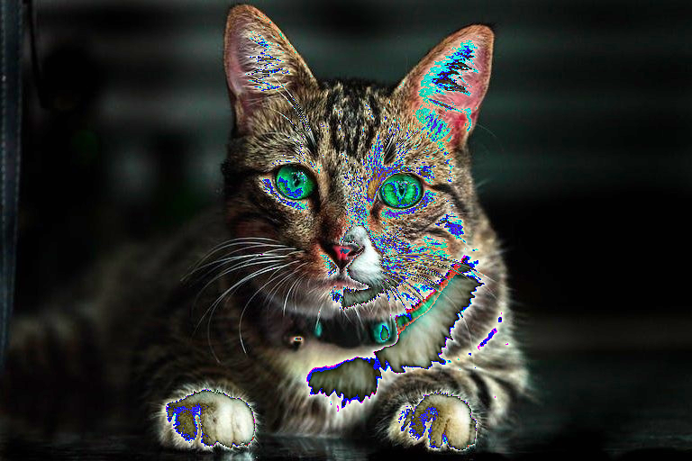

seed = 1234
set_seed(seed)core
Some utility functions for working with PyTorch
set_seed
set_seed (seed:int, deterministic:bool=False)
*Sets the seed for generating random numbers in PyTorch, NumPy, and Python’s random module.
This function is used for reproducibility in stochastic operations, e.g. shuffling in data loaders, random initializations in neural networks, etc.
Note: The deterministic flag does not guarantee complete reproducibility. Operations which rely on CUDA might still produce non-deterministic results.*
| Type | Default | Details | |
|---|---|---|---|
| seed | int | The seed value to be set for all random number generators. | |
| deterministic | bool | False | If True, uses deterministic algorithms in PyTorch where possible for reproducibility, at the cost of performance. |
| Returns | None |
pil_to_tensor
pil_to_tensor (img:<module'PIL.Image'from'/opt/hostedtoolcache/Python/3.1 0.15/x64/lib/python3.10/site-packages/PIL/Image.py'>, mean=[0.485, 0.456, 0.406], std=[0.229, 0.224, 0.225])
*Converts a PIL image to a normalized and batched PyTorch tensor.
Returns: The normalized and batched tensor.*
| Type | Default | Details | |
|---|---|---|---|
| img | PIL.Image | The input PIL image. | |
| mean | list | [0.485, 0.456, 0.406] | The mean values for normalization. |
| std | list | [0.229, 0.224, 0.225] | The standard deviation values for normalization. |
Set the path for the images directory
img_dir = Path('../images/')
img_dirPath('../images')Open sample image
img_path = '../images/cat.jpg'
src_img = Image.open(img_path).convert('RGB')
print(f"Image Size: {src_img.size}")
src_imgImage Size: (768, 512)
Convert image to tensor
img_tensor = pil_to_tensor(src_img, [0.5], [0.5])
img_tensor.shape, img_tensor.min(), img_tensor.max()(torch.Size([1, 3, 512, 768]), tensor(-1.), tensor(1.))tensor_to_pil
tensor_to_pil (tensor:torch.Tensor)
*Convert a tensor to a PIL image.
Returns: img (PIL.Image): The PIL image*
| Type | Details | |
|---|---|---|
| tensor | Tensor | The tensor to be converted |
Convert tensor to image
tensor_img = tensor_to_pil(transforms.ToTensor()(src_img))
tensor_img
iterate_modules
iterate_modules (module:torch.nn.modules.module.Module)
A generator function that yields the children and grandchildren of a PyTorch module.
| Type | Details | |
|---|---|---|
| module | Module | A PyTorch module that contains child modules to be iterated over. |
from torchvision import models
vgg = models.vgg16(weights=models.VGG16_Weights.IMAGENET1K_V1).features
for index, module in enumerate(iterate_modules(vgg)):
if type(module) == torch.nn.modules.activation.ReLU:
print(f"{index}: {module}")1: ReLU(inplace=True)
3: ReLU(inplace=True)
6: ReLU(inplace=True)
8: ReLU(inplace=True)
11: ReLU(inplace=True)
13: ReLU(inplace=True)
15: ReLU(inplace=True)
18: ReLU(inplace=True)
20: ReLU(inplace=True)
22: ReLU(inplace=True)
25: ReLU(inplace=True)
27: ReLU(inplace=True)
29: ReLU(inplace=True)Downloading: "https://download.pytorch.org/models/vgg16-397923af.pth" to /home/runner/.cache/torch/hub/checkpoints/vgg16-397923af.pth
0%| | 0.00/528M [00:00<?, ?B/s] 3%|2 | 13.8M/528M [00:00<00:03, 143MB/s] 6%|5 | 29.6M/528M [00:00<00:03, 157MB/s] 12%|#1 | 62.8M/528M [00:00<00:02, 244MB/s] 19%|#8 | 97.9M/528M [00:00<00:01, 293MB/s] 25%|##5 | 133M/528M [00:00<00:01, 318MB/s] 32%|###1 | 167M/528M [00:00<00:01, 331MB/s] 38%|###8 | 201M/528M [00:00<00:01, 342MB/s] 45%|####4 | 235M/528M [00:00<00:00, 345MB/s] 51%|##### | 269M/528M [00:00<00:00, 347MB/s] 57%|#####7 | 303M/528M [00:01<00:00, 350MB/s] 64%|######4 | 338M/528M [00:01<00:00, 355MB/s] 71%|####### | 372M/528M [00:01<00:00, 356MB/s] 77%|#######6 | 406M/528M [00:01<00:00, 357MB/s] 84%|########3 | 441M/528M [00:01<00:00, 359MB/s] 90%|######### | 475M/528M [00:01<00:00, 358MB/s] 97%|#########6| 509M/528M [00:01<00:00, 357MB/s]100%|##########| 528M/528M [00:01<00:00, 334MB/s]tensor_stats_df
tensor_stats_df (tensor, attrs=['mean', 'std', 'min', 'max'], shape=True)
Calculate and return statistics of a given tensor as a pandas DataFrame.
| Type | Default | Details | |
|---|---|---|---|
| tensor | Input tensor for which statistics are to be calculated. | ||
| attrs | list | [‘mean’, ‘std’, ‘min’, ‘max’] | List of statistics to be calculated. |
| shape | bool | True | If True, include shape of the tensor in the output. |
tensor_stats_df(torch.randn(1, 3, 256, 256))| 0 | |
|---|---|
| mean | 0.003342 |
| std | 0.99868 |
| min | -4.558271 |
| max | 4.815985 |
| shape | (1, 3, 256, 256) |
get_torch_device
get_torch_device ()
*This function returns the device to be used for PyTorch computations.
Returns: str: “mps” if Metal Performance Shaders (MPS) for MacOS is available, “cuda” if CUDA is available, “cpu” otherwise*
get_torch_device()'cuda'denorm_img_tensor
denorm_img_tensor (img_tensor:torch.Tensor, mean:list, std:list)
*Denormalize an image tensor.
Returns: torch.Tensor: The tensor representing the denormalized image.*
| Type | Details | |
|---|---|---|
| img_tensor | Tensor | The tensor representing the normalized image. |
| mean | list | The mean values used for normalization. |
| std | list | The standard deviation values used for normalization. |
tensor_to_pil(img_tensor)
tensor_to_pil(denorm_img_tensor(img_tensor, [0.5], [0.5]))move_data_to_device
move_data_to_device (data, device:torch.device)
*Recursively move data to the specified device.
This function takes a data structure (could be a tensor, list, tuple, or dictionary) and moves all tensors within the structure to the given PyTorch device.*
| Type | Details | |
|---|---|---|
| data | Data to move to the device. | |
| device | device | The PyTorch device to move the data to. |
data_tuple = (
{
'masks': torch.tensor([[[0, 1, 2], [3, 4, 5], [6, 7, 8]]], dtype=torch.int32),
'boxes': torch.tensor([[19.9176, 246.6063, 512.0000, 438.8571]]),
'labels': torch.tensor([0.]),
},
{
'masks': torch.tensor([[[0, 0, 0], [0, 0, 0], [0, 0, 0]]], dtype=torch.int32),
'boxes': torch.tensor([[19.9176, 246.6063, 512.0000, 438.8571]]),
'labels': torch.tensor([0.]),
},
)
move_data_to_device(data_tuple, 'cpu')({'masks': tensor([[[0, 1, 2],
[3, 4, 5],
[6, 7, 8]]], dtype=torch.int32),
'boxes': tensor([[ 19.9176, 246.6063, 512.0000, 438.8571]]),
'labels': tensor([0.])},
{'masks': tensor([[[0, 0, 0],
[0, 0, 0],
[0, 0, 0]]], dtype=torch.int32),
'boxes': tensor([[ 19.9176, 246.6063, 512.0000, 438.8571]]),
'labels': tensor([0.])})ImageDataset
ImageDataset (image_paths, transform=None)
A PyTorch Dataset for RGB images.
compute_mean_std
compute_mean_std (image_paths:List[pathlib.Path], batch_size:int=32, num_workers:int=0, image_size:int=224, transform:torchv ision.transforms.transforms.Compose=None)
Computes the mean and standard deviation of images provided in image_paths.
| Type | Default | Details | |
|---|---|---|---|
| image_paths | List | List of image file paths. | |
| batch_size | int | 32 | Number of images to process in a batch. |
| num_workers | int | 0 | Number of subprocesses to use for data loading. |
| image_size | int | 224 | Size to resize images to. |
| transform | Compose | None | Torchvision transforms to apply to the images. |
| Returns | dict | Dictionary containing ‘mean’ and ‘std’ values. |
compute_mean_std(img_paths, batch_size=64)